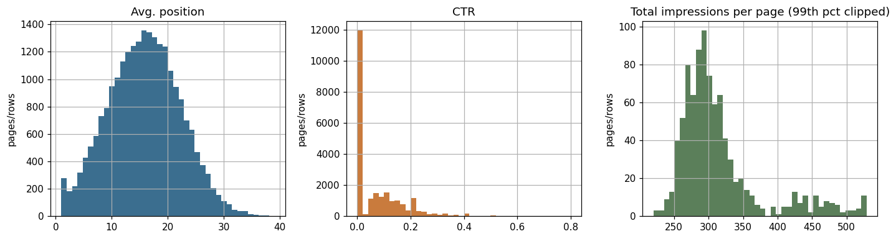
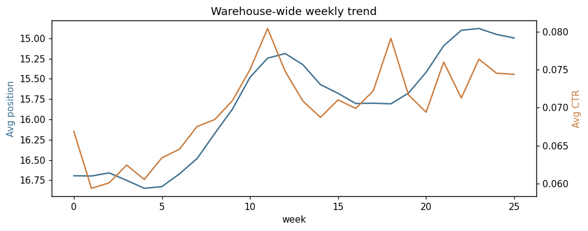
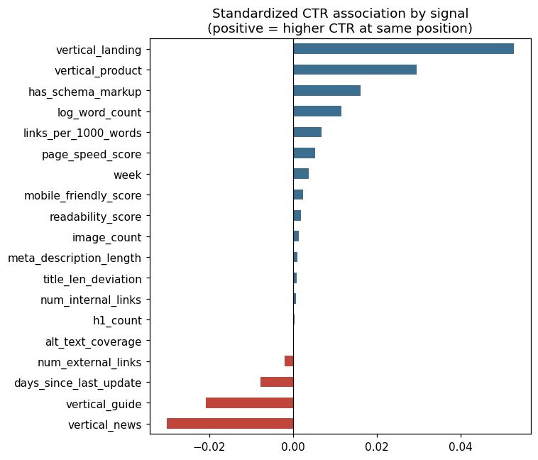
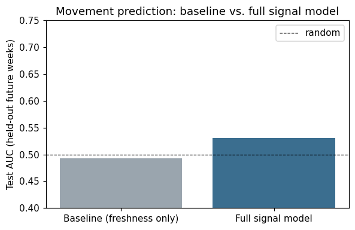
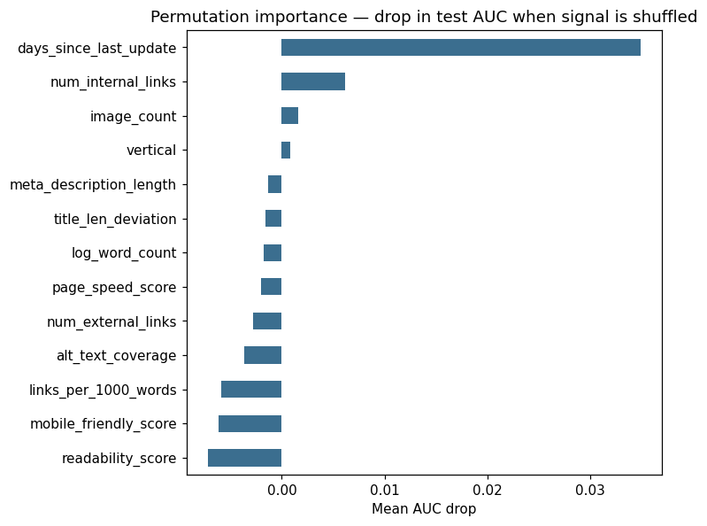

What actually moves rankings
A signal-level study of 900 pages over 26 weeks — which content and technical signals associate with visibility, clicks, and forward position movement.
Introduction
Content and SEO teams sit on a constant, low-grade decision: with limited hours, which pages get refreshed, restructured, linked-to, or left alone this quarter? Intuition and tribal knowledge ("older pages need refreshing," "long content ranks better") often stand in for evidence, because connecting a page's content and technical attributes to what happens to it in search is genuinely hard — outcomes are noisy, algorithms are opaque, and most easy correlations (position vs. clicks) are true almost by definition rather than actionable.
This capstone asks a narrower, answerable version of that question: across a warehouse of pages tracked weekly, which safe, page-owned signals — content depth, structured data, internal linking, freshness, technical health — are associated with clicks and with a page's position getting measurably better over the following weeks? The goal is not to explain or reverse-engineer a search algorithm, which the public rule for this project explicitly rules out, but to produce a defensible, evidence-ranked shortlist that a content team can act on with appropriate confidence.
The decision this work supports is concrete: given a backlog of pages and a fixed content-ops budget, which signal should a team invest in first, second, and third — and how much should they trust the resulting shortlist versus treating it as one input among several?
Data
The pipeline is built against the schema of the FlyRank ML Internship warehouse: a page-week panel of search performance paired with content and technical signals. The current run uses a synthetic placeholder generated to that same schema (900 pages × 26 weeks, five content verticals), not the real gated release, because this build was produced without Hugging Face token access. The generator, assumptions, and exact swap-in query are documented in work/data/generate_synthetic_data.py.
Table & window
One page-week table, 23,400 rows: page_id, vertical, week (0–25, ≈6 months), plus outcome columns (impressions, clicks, ctr, avg_position) and signal columns (word_count, has_schema_markup, num_internal_links, num_external_links, days_since_last_update, mobile_friendly_score, page_speed_score, title_length, meta_description_length, h1_count, image_count, alt_text_coverage, readability_score).
Exclusions (public-safe)
- Last 4 weeks of the panel, for label purposes only — the forward-movement label needs a full 4-week-ahead window; rows without one are dropped from the labeled modeling table (they remain in the raw panel used for EDA).
- No query-level or click-level raw exports — everything here is a page-week aggregate; no individual queries, URLs, or credentials appear anywhere in this repo.
- No missingness-driven exclusions — the panel (real or synthetic) had zero nulls and no range violations at intake (Section-1 notebook data-quality checks).


Methodology
Label definition
Two outcomes are studied. CTR is used directly as a continuous outcome. Forward position movement is engineered as a binary label: for a page at week t, the label is 1 if its average position improves by at least 3 spots, comparing week t against the mean of weeks t+1…t+4 — a genuinely forward-looking window, built only from data that would have been unknown at prediction time.
Features
All features are known as of week t: log word count, schema markup presence, internal/external link counts, days since last update, mobile-friendliness and page-speed scores, title-length deviation from a common SERP-friendly length, meta description length, H1 count, image count, alt-text coverage, readability score, internal-links-per-1000-words, vertical, and week itself.
Baseline & model
The baseline is deliberately naive: a single-feature logistic regression on days_since_last_update alone, matching the heuristic a stakeholder might already use ("just refresh old stuff"). The full model is a gradient-boosted classifier (HistGradientBoostingClassifier) on the complete feature set. CTR association uses a standardized linear regression so coefficients are directly interpretable as direction and relative magnitude.
Validation design
Primary split is time-aware: train on weeks 0–14, tune on weeks 15–17, evaluate once on weeks 18–21 — the model never sees its own future. As a second, independent check, a grouped 5-fold cross-validation by page_id confirms the result isn't an artifact of specific pages dominating one split, and that it holds for pages the model has never seen at all (Section 5 of the leakage-checks notebook has the full audit table).
Results
CTR association
The linear CTR model explains a modest but real share of variance out-of-time (test R² = 0.127). Structured data, longer content, denser internal linking, and faster pages all associate with higher CTR at a given position; older, un-refreshed pages and (holding position fixed) pages with more external links associate with lower CTR. Vertical matters more than any single content signal — landing and product pages out-click blog and guide content at comparable positions.

Forward position movement
The freshness-only baseline is barely better than chance on held-out future weeks (AUC 0.49) — refreshing at random doesn't reliably predict movement on its own. The full signal model does modestly better on the same weeks (AUC 0.53), and considerably better under grouped cross-validation across the whole panel (AUC 0.60 ± 0.02), which is the more trustworthy estimate of how the signal generalizes to pages the model hasn't seen.

Permutation importance on the full model shows freshness dwarfing every other feature for movement prediction, with internal link count a distant second and everything else contributing little on its own — which also explains why the full model's lift over the freshness-only baseline is modest rather than dramatic.

| Question | Metric | Baseline | Full model |
|---|---|---|---|
| CTR association | Test R² | — | 0.127 |
| Forward movement | Test AUC (weeks 18–21) | 0.492 | 0.531 |
| Forward movement | Grouped 5-fold CV AUC | — | 0.596 ± 0.015 |
Limitations & honest framing
Every result on this page is observed and directional, drawn from association models on one time-boxed panel — none of it is a causal claim, and none of it purports to explain or reverse-engineer how a search algorithm works.
- Modest movement signal. AUC 0.53 (time-aware) to 0.60 (grouped CV) means the model ranks pages usefully but is far from a precise predictor. Treat it as a shortlist generator for human review, not an auto-trigger for action.
- Placeholder data. All numbers above come from a synthetic panel schema-matched to the real warehouse (Section 2). They will shift — possibly meaningfully — once re-run on the real FlyRank data, and should not be cited as production findings until that happens.
- Vertical and base-rate sensitivity. Only 12.9% of page-weeks show a ≥3-position forward improvement; class imbalance means AUC should be read alongside average precision (0.13 baseline vs. 0.15 full model), not in isolation.
- Single threshold and window. The 3-position / 4-week label definition is one reasonable choice, not the only one; a stricter or looser threshold would shift which signals look most important.
Ranked recommendations
Ordered by the strength of the larger of its two pieces of evidence — standardized CTR coefficient or permutation-importance AUC drop — so a signal ranks highly if it meaningfully moves either outcome.
-
01
Rebuild the refresh calendar around genuinely stale pages first
Evidence: by far the top permutation-importance feature for forward movement; also negatively associated with CTR as pages age.
Action: prioritize content refresh cadence above every other lever in this list. -
02
Add structured data to pages that rank but under-click
Evidence: positive, consistent CTR association holding vertical and word count constant.
Action: make schema markup a standing checklist item on every page audit. -
03
Audit internal linking on high-value, thinly-linked pages
Evidence: second-strongest movement-model signal after freshness.
Action: find orphaned or under-linked pages inside high-value topic clusters and add contextual links. -
04
Benchmark CTR by vertical, not against a single warehouse average
Evidence: landing and product pages show meaningfully higher baseline CTR than blog or guide content at comparable positions.
Action: set vertical-specific CTR baselines before flagging a page as "underperforming." -
05
Deprioritize word count as a standalone lever
Evidence: small positive CTR association; effectively no signal for forward movement once freshness and links are accounted for.
Action: write to serve intent, not to hit a length target chasing rankings. -
06
Keep page speed and mobile-friendliness as ongoing hygiene
Evidence: small, consistent, positive CTR association; not a top movement-model feature.
Action: maintain technical health continuously — necessary, but not the headline initiative.
Reproducibility
Every number and chart on this page is generated, not hand-typed — re-running the notebooks in order reproduces this page exactly (on the synthetic data) or updates it (once pointed at the real warehouse).
Swapping in the real dataset
One change, in notebook 01, replaces the synthetic panel with the real gated warehouse — every downstream cell is unchanged:
con = duckdb.connect()
con.sql("SET hf_token='<your_token>';")
panel = con.sql(
"SELECT * FROM read_parquet('hf://datasets/<flyrank-repo>/*.parquet')"
).df()Re-run notebooks 01→04→capstone in order; the ranked recommendations table and every figure on this page regenerate from the saved metrics automatically.
Data credit
Built on the FlyRank ML Internship dataset — flyrank.ai. This deployed build ran on a synthetic placeholder matched to that dataset's schema (Section 2); results will be re-run and republished against the real release.